Synonymes : Rhizophora corniculata L., Aegiceras majus Gaertn.
Common name : Goat's horn mangrove
Common name in Tamil : Vehtilikanna, narikandam
Common name in Telugu : Guggilam, dudumara
Common name in Singhalese : Heen kadol
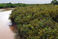
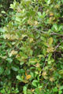
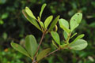
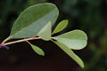
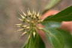
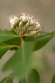
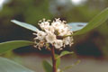
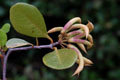
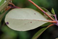
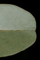
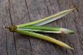
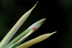
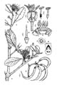
Diagnostic characters
Botany & morphology
Regeneration
Reproductive biology
Ecology
Distribution
Uses
Small evergreen tree or shrub up to 6 m tall; bark dark grey. Leaves spirally arranged. Flowers fragrant, white. Fruits capsule in bunches, yellow, crescent-shaped with pointed apex.
Leaves simple, alternate, spirally arranged; petiole short; lamina elliptic to obovate, apex rounded to slightly emarginate, base cuneate, 4 - 6 x 2 – 3 cm, midrib prominent below and often slightly red.
Inflorescence axillary umbels with 15 - 20 flowers; peduncle short, 5 mm long.
Flowers white, fragrant, regular, 1.5 – 2 cm long; calyx lobes 5, imbricate; corolla 5 lobed, twisted to the left; stamens 5, opposite to corolla lobes, filaments linear; ovary fusiform; style narrow and elongate.
Fruit capsule, falcately curved, tapering to pointed apex, greenish yellow, 1-seeded.
Bark smooth dark grey.
Germination modified epigeal type. The propagule consists of the pedicellate fruit, which dehisces early to expose the green radicle, which curves away from the capsule wall. On the ground the radicle penetrates the substrate and elongates to lift the plumule. The plumule extends through the fruit wall.
The flowers secrete nectar and pollinated by insects.
Gregarious on the banks of tidal streams and intertidal zones, often forming pure zones along the muddy flats. It appears to be a pioneer species in some sites along with Avicennia marina. This species is often found in association with Ceriops decandra and Rhizophora sp.
India and Sri Lanka to South China and Hong Kong, through Malaysia to the Philippines, New Guinea, and tropical Australia. In India it occurs in the mangrove areas along both the coasts from Saurashtra and Kutch to Sunderbans and in the Bay Islands.
Bark and roots are used like fish poison and wood is used as fire–wood. Flower nectar forms one of the sources of honey.
Top of the page